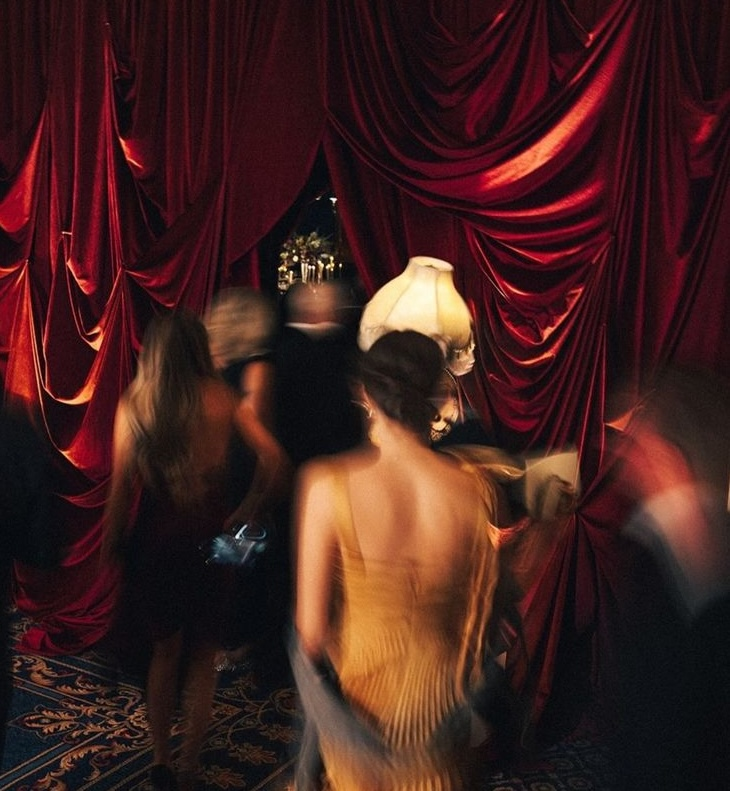
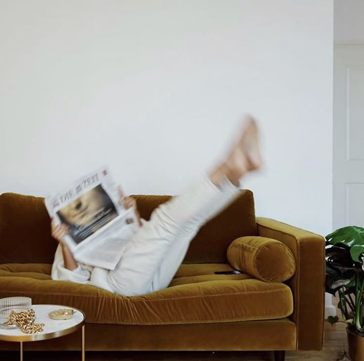
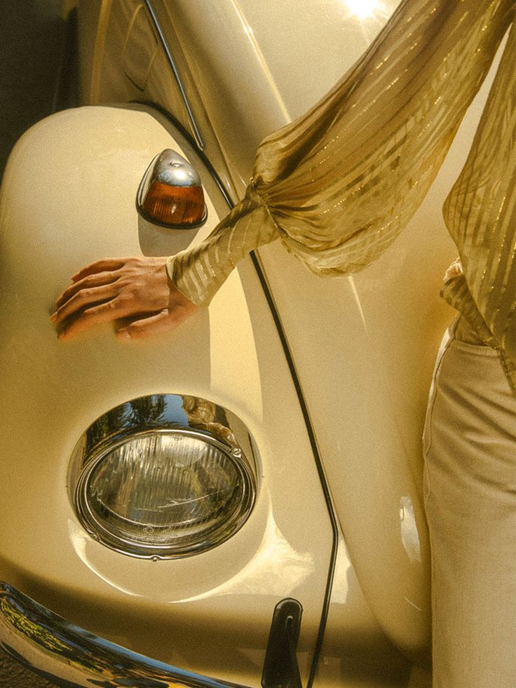

Sosyal Yorgunluk: Sorun İnsanlar mı, Sinir Sistemin mi?
İletişim sonrası tükenmiş hissetmenin gerçek sebebi.
Kişisel Gelişim Mentoru · Yaşam Koçu
Bazen değişmesi gereken koşullar değil, onları yorumlama ve onlara verdiğimiz tepkilerdir. Neden aynı döngülere geri dönüyor, benzer sorunları farklı şekillerde yeniden yaşıyorsunuz? Tekrarlayan düşünce ve davranışlarınızı anlamak, sizi aynı noktaya getiren örüntüleri fark etmek ve değişim için yeni yollar geliştirmek üzere kendinize farklı bir pencereden bakın.

Hakkımda
İnsanı anlamaya yönelik merakım, zamanla beni farklı disiplinleri keşfetmeye yöneltti. Rus uzmanlardan AQ Coach ve Life Coach alanlarında; temel psikoloji, psikosomatik ve nörobilim üzerine eğitimler aldım.
Felsefeye, insan davranışlarına ve zihin-beden ilişkisine duyduğum ilgi, insan deneyimine farklı pencerelerden bakmamı sağladı. Zamanla benim için asıl merak uyandıran sorulardan biri şu oldu: İnsan, değiştirmek istediği şeyleri neden bazen tekrar tekrar yaşıyor?
Bu sorunun peşinden giderken insanın kendisiyle kurduğu ilişkiyi, düşünme biçimini, duygularını ve davranışlarını anlamanın önemini daha fazla keşfettim. Çünkü kendimizi tanımak, yalnızca kim olduğumuzu tarif etmek değil; nasıl düşündüğümüzü, neleri tekrar ettiğimizi ve hayatımızı hangi bakış açılarıyla yorumladığımızı da görebilmektir.
Bugün kişisel gelişim mentorluğu ve koçluk çalışmalarımda, bu merakı insanın kendini daha yakından tanımasına katkı sağlayacak bir keşif alanına dönüştürmeyi önemsiyorum. Her insanın hikâyesinin ve deneyiminin kendine özgü olduğuna inanıyorum.
Başkalarının seni nasıl gördüğünü düzeltmeye çalışıyorsun... Peki sen, kendine nasıl bakıyorsun?
Yaklaşım
Bazen koşullar değişse de kendimizi benzer duyguların, tepkilerin ve sonuçların içinde buluruz. Birlikte, tekrar eden düşünce ve davranış örüntülerini inceleyerek sizi aynı noktaya getiren dinamikleri anlamaya çalışırız.
Düşünceleriniz, duygularınız, alışkanlıklarınız ve olayları yorumlama biçiminiz birbirinden bağımsız değildir. Felsefe, psikoloji, koçluk ve zihin-beden ilişkisine yönelik eğitimlerimden beslenen yaklaşımımda, deneyiminize farklı açılardan bakmanıza alan açarız.
Amacım sizin yerinize karar vermek ya da size hazır reçeteler sunmak değil. Kendi örüntülerinizi daha net görmenize, seçeneklerinizi değerlendirebilmenize ve günlük hayatınızda daha bilinçli seçimler geliştirmenize eşlik etmek. Hedef, zamanla kendi kendinize rehberlik edebilmeniz.
Mini Test
Bir evdesin. Koridorun sonunda dört farklı kapı var. İçlerinden yalnızca birini açabilirsin. Hangisini seçersin?
Bu test bir teşhis değil; kendine farklı bir pencereden bakmak için bir davettir.
Not defterimden
Aylardır “Neden böyle oldu?” sorusunun sakızını çiğneyip duruyorsun, tat çoktan bitti, geriye sadece çene yorgunluğu ve zihinsel bir enkaz kaldı. Kek tarifini yüzlerce kez okumak ağzına kek tadı vermez. Bilgi, eyleme geçmediği sürece yalnızca zihni şişiren ağır bir yüktür. Gerçek dönüşüm, korkuya rağmen atılan ilk somut adımla başlar.
Kendinle savaşmayı bırakmadığın, içindeki o yaralı çocuğu sürekli cezalandırdığın sürece, dışarıda kazandığın hiçbir zafer sana huzur vermeyecek. Durup kendine şu dürüst soruyu sor: Değer görmediğin, tükendiğin o yerde kalma direncini gerçekten o ilişkiyi kurtarmak için mi gösteriyorsun, yoksa başkalarına dönüp “Lütfen beni sevin, yeterli olduğumu söyleyin” demek için mi? Kendi değerini başkalarının terazisine koymayı bırakmadığın sürece, kendi hayatının başrolünden istifa edip başkasının senaryosunda figüran kalmaya mahkûm olursun.
Olduğun yeri sen seçmedin; hayatın sana sunduğu şartlar, etrafındaki insanların kuralları ya da içine hapsedildiğin o mekan seni bugünkü kalıba soktu. Ancak mesele nerede başladığın değil; her gün bilinçli ya da bilinçsiz bir şekilde aynı odada kalmayı, aynı acıyı tekrar etmeyi senin seçmen. “Hazır hissetmeyi” beklemek, aslında o konforlu hapishaneden çıkmaya korktuğun için eylemsizliğine uydurduğun en entelektüel kılıftır.
Yorumlar
Çok güzel enerjisi ve sohbetiyle vaktin nasıl geçtiğini anlamadım, bana çok iyi geldi. Nokta atışı tespitleri için de çok teşekkür ederim.
Adalin Hanım’ın yanında kendimi bir uzmanın odasında değil de, beni çok iyi anlayan eski bir dostumla kahve içip dertleşiyor gibi hissettim. O kadar rahat, o kadar samimi bir ortam yarattı ki zamanın nasıl geçtiğini anlamadım. Ve bu samimiyetin arkasında sağlam donanımını hissettiriyor; klişe dışında şeyler duymak bana çok iyi geldi. Kesinlikle seansların devamını getireceğim. Teşekkürler.
Kendimi psikolojik olarak hiç sağlıklı hissetmediğim bir dönemde karşıma çıktı. İlk görüşmede dahi bana kendimi iyi hissettirdi.
Her derde deva
Güler yüzü, enerjisi, dikkat çektiği noktalarla gerçekten harika ve işinin ehli biri.
Öncelikle önemli bir bilgi birikimine sahip. Sorduğunuz sorulara kararlılıkla ve tatmin edici cevaplar veren, olayları farklı düşünmeye yönlendiren, nokta atışı tespitler yapan ve tüm bunlar olurken inanılmaz samimiyetiyle çok rahat hissettiren bir mentör. Kendi adıma çok geniş yelpazede cevaplar bulabildiğim bir seans oldu. Ayrıca enerjisi, yaklaşımı, iletişimi tek kelimeyle harika. Tekrar görüşmek dileğiyle…
Konuşurken kendimi daha net görmeye başladım, farkında olmadığım şeyleri fark ettim. Egzersiz kitapçığı için ayrıca teşekkür ederim.
Kendime karşı ne kadar otomatik davrandığımı fark ettim. Daha önce üzerinde durmadığım düşüncelerimi incelemek, kendimi anlamam için farklı bir bakış açısı sundu.
Seanslar
Enerjimizin uyuşup uyuşmadığını görmek için kısa bir tanışma.
Seans oluşturTutumlarınız, iç dünyanız ve bedeninizle kapsamlı tek seans.
Seans oluşturFarkındalık, dönüşüm ve pekiştirme: üç adımda derin çalışma.
Seans oluşturBlog

İletişim sonrası tükenmiş hissetmenin gerçek sebebi.

Korkularınızın arkasındaki gerçek psikolojik anlam.

Sürekli tekrar eden hayat senaryolarının nedeni.
Gerçekten değişmek istiyorsanız, sadece okumak yetmez. Uygulamak gerekir.
Seans Başlat